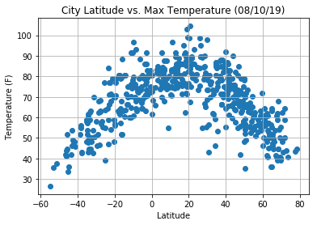

Conclusion
Using the maximum tempature for the random cities, we can conclude that cities closer to the equator tend to have a higher tempature than cities located closer to a pole. This is due to the correlation between the sun and the earth's rotational angle. Cities closer to the equator have more exposure to sun.